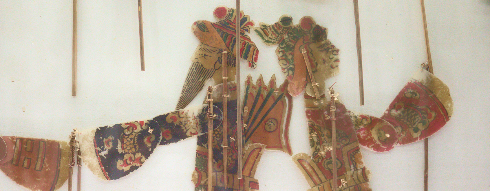
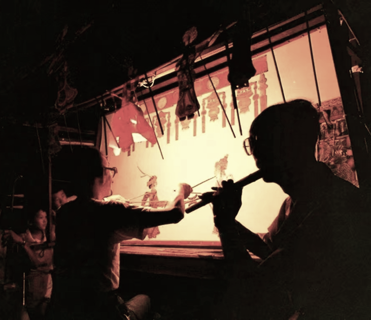
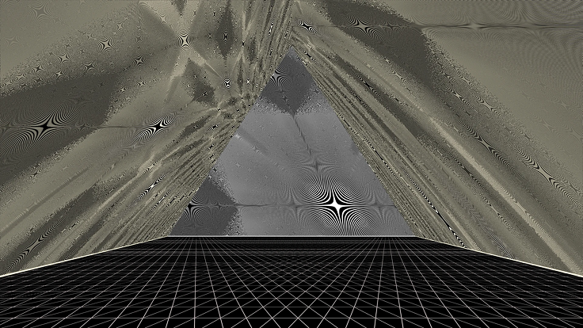
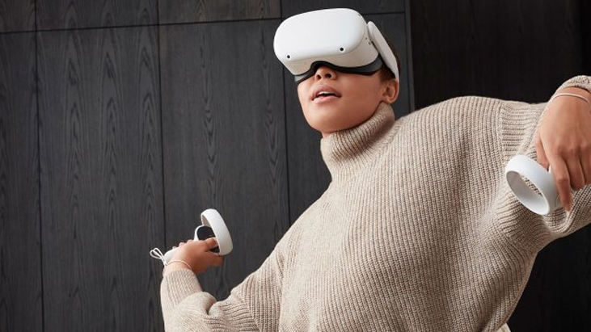
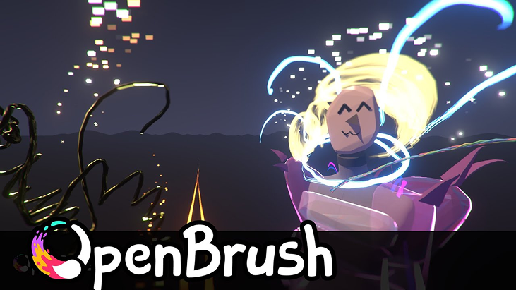

Design by Cids Ho
Creativity Support Virtual Reality (VR)
Interaction Design
Digitalized Heritage
Interaction Design
Digitalized Heritage
Project
Shadow
©2025
Not Just a Gimmick:
A Preliminary Study on Designing
Interactive Media Art (IMA) to Empower Embedded Culture's Practitioners
A Preliminary Study on Designing
Interactive Media Art (IMA) to Empower Embedded Culture's Practitioners
https://cidsho.github.io/

Time Span: 2022-2024
Background & Research
Xi'an, Shaanxi
Lufeng, Shantou, Guangdong
Qibao, Shanghai
Design Concept
Design Concept
Inspiration
Shadow Play
Chinese shadow play (Piying) is an ancient art form of storytelling and entertainment that uses flat articulated figures (puppets) to create the illusion of moving images on a translucent screen.
Due to its unique charm, shadow puppetry often features as a theme in interactive media art (IMA), inspiring numerous new media works with its distinct visual style.
However, despite its frequent presence in the public eye, the survival of this traditional art form has not improved. Instead, the loss of techniques and the decline in the practitioner community have resulted in shadow puppetry being well-preserved in only a few regions of China.

@Qibao Shadow Puppet Museum
Interactive
Media
Art
Media
Art
as cultural heritage protector...
Interactive Media Art (IMA) has emerged as a powerful tool in cultural heritage preservation, celebrated for its ability to recreate structures and visual styles while engaging audiences with heritage through interactive methods. By allowing users to experience cultural artifacts firsthand, IMA demonstrates how traditional art forms can embrace modern technology.
However, while the use of IMA to promote cultural content is promising, its potential to contribute to the creation of such content and support practitioners remains largely untapped. Many IMAs, though visually appealing, often fail to make a meaningful impact on the preservation and evolution of traditional art, becoming mere "art on the wall."
Our field research highlights this gap, stressing the need for IMA to evolve beyond a "fancy display" and become a tool that genuinely supports the cultural communities it draws from, fostering sustainable innovation and development in traditional art forms.
The true significance of IMA lies not just in how it presents traditional art through new media, but in its potential to contribute to the long-term growth and sustainability of these cultural practices.
However, while the use of IMA to promote cultural content is promising, its potential to contribute to the creation of such content and support practitioners remains largely untapped. Many IMAs, though visually appealing, often fail to make a meaningful impact on the preservation and evolution of traditional art, becoming mere "art on the wall."
Our field research highlights this gap, stressing the need for IMA to evolve beyond a "fancy display" and become a tool that genuinely supports the cultural communities it draws from, fostering sustainable innovation and development in traditional art forms.
The true significance of IMA lies not just in how it presents traditional art through new media, but in its potential to contribute to the long-term growth and sustainability of these cultural practices.
Mixed Reality
as Interactive Media Art...
Mixed Reality (MR) is a significant area within Interactive Media Art (IMA) that merges elements of Virtual Reality (VR) and Augmented Reality (AR), seamlessly blending the real world with digital content. Through MR technology, audiences can interact with virtual objects within their physical environment, enhancing the immersion and interactivity of art pieces. The application of MR in IMA not only expands the forms of artistic expression but also offers a richer sensory experience, creating a closer connection between physical and virtual spaces in art.

@Olafur Eliasson
as Creativity Support Tools (CST)...
Mixed Reality (MR) as a Creativity Support Tool is showing immense potential for application. MR breaks down the boundaries between physical and virtual spaces, offering a novel creative experience that allows artists, designers, and creators to interact with virtual elements in real-world environments, enabling more intuitive ideation and creation. This technology opens up new possibilities for cross-disciplinary innovation, from art and design to education and training, supporting the generation and expression of creativity. However, despite the promising future of MR as a creativity support tool, there are still many areas that need to be explored.
With its reliance on puppet manipulation and visual storytelling, shadow play presents an exemplary case of how VR can extend traditional artistic practices into the digital realm.
The art form's emphasis on manipulation closely mirrors the general input method (controllers) to VR, making it an ideal subject for investigating the potential of VR to recreate real life hand-on traditional skills through interaction design and support artistic practice within, engage diverse audiences.
The art form's emphasis on manipulation closely mirrors the general input method (controllers) to VR, making it an ideal subject for investigating the potential of VR to recreate real life hand-on traditional skills through interaction design and support artistic practice within, engage diverse audiences.

@Open Brush

@Quest